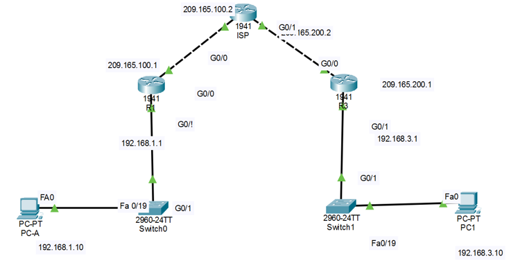

ACTIVIDAD 06 — Implementación IPSec VPN
Túnel seguro entre dos LANs a través de un ISP intermediario, usando ACL (tráfico interesante), IKE (Fase 1), IPSec (Fase 2), crypto map y verificación.
1) Introducción 2) Desarrollo técnico 3) Multimedia 4) Reflexión 5) Referencias1) Introducción contextual al tema
Esta práctica implementa una VPN site-to-site con IPSec entre dos redes privadas en distintas ubicaciones. IPSec cifra el tráfico “interesante” entre routers a través de Internet y asegura: confidencialidad (cifrado), integridad (hash/HMAC) y autenticación (pre-shared key).
2) Desarrollo técnico de la actividad
2.1 Escenario de red
La topología está compuesta por tres routers: un ISP intermediario y dos routers que representan dos redes LAN distintas. Dispositivos: 3 Routers Cisco 1941 (ISP, R1, R2), 2 Switches 2960, 2 PCs finales.

Ruta esperada:
./topologia.png (en la raíz del sitio).
Si no carga, revisa que el nombre sea exactamente topologia.png y que esté en la raíz (junto a tu index.html).
2.2 Configuración básica (interfaces + ruta por defecto)
Configuración base tal como aparece en el documento.
! Router ISP
enable
configure terminal
hostname ISP
interface g0/0
ip address 209.165.100.2 255.255.255.0
no shutdown
interface g0/1
ip address 209.165.200.2 255.255.255.0
no shutdown
ip route 0.0.0.0 0.0.0.0 209.165.100.2! Router R1
enable
configure terminal
hostname R1
interface g0/1
ip address 192.168.1.1 255.255.255.0
no shutdown
interface g0/0
ip address 209.165.100.1 255.255.255.0
no shutdown
ip route 0.0.0.0 0.0.0.0 209.165.100.2! Router R2
enable
configure terminal
hostname R2
interface g0/1
ip address 192.168.3.1 255.255.255.0
no shutdown
interface g0/0
ip address 209.165.200.1 255.255.255.0
no shutdown
ip route 0.0.0.0 0.0.0.0 209.165.100.22.3 Activación de características de seguridad (securityk9)
Habilitar el paquete de seguridad en cada router para poder utilizar IPSec. :contentReference[oaicite:6]{index=6}
license boot module c1900 technology-package securityk9
end
write memory
reload2.4 Definición del “tráfico interesante” (ACL 110)
Se especifica qué tráfico será protegido por la VPN.
! En R1
access-list 110 permit ip 192.168.1.0 0.0.0.255 192.168.3.0 0.0.0.255! En R2
access-list 110 permit ip 192.168.3.0 0.0.0.255 192.168.1.0 0.0.0.2552.5 Fase 1 — IKE / ISAKMP
Se negocian parámetros iniciales de seguridad (cifrado, hash, autenticación, grupo DH, lifetime).
! R1
crypto isakmp policy 15
encryption aes
hash sha
authentication pre-share
group 5
lifetime 86400
exit
crypto isakmp key cisco123 address 209.165.200.1! R2
crypto isakmp policy 15
encryption aes
hash sha
authentication pre-share
group 5
lifetime 86400
exit
crypto isakmp key cisco123 address 209.165.100.1Crea el canal IKE seguro para luego negociar IPSec (Fase 2). Si aquí hay mismatch (clave, hash, cifrado), el túnel no sube.
2.6 Fase 2 — IPSec (Transform-set)
Define cómo se cifrarán los datos (ESP AES + SHA HMAC).
! R1
crypto ipsec transform-set VPN-SET esp-aes esp-sha-hmac! R2
crypto ipsec transform-set VPN-SET esp-aes esp-sha-hmac2.7 Creación del Crypto Map (asociar peer + ACL + cifrado)
Asocia peers, ACL 110 y transform-set, con PFS group5.
! R1
crypto map VPN-MAP 10 ipsec-isakmp
set peer 209.165.200.1
set transform-set VPN-SET
set pfs group5
match address 110! R2
crypto map VPN-MAP 10 ipsec-isakmp
set peer 209.165.100.1
set transform-set VPN-SET
set pfs group5
match address 1102.8 Aplicación del Crypto Map en interfaz WAN
Se aplica el mapa en la interfaz que da a Internet (g0/0).
! R1
interface g0/0
crypto map VPN-MAP! R2
interface g0/0
crypto map VPN-MAP2.9 Verificación
Comandos para comprobar que el túnel está activo y que hay tráfico cifrado.
show crypto isakmp sa
show crypto ipsec sa
ping 192.168.3.10
Si la VPN funciona correctamente, el ping entre las redes privadas (LAN1 ↔ LAN2) debe responder,
y show crypto ipsec sa debe mostrar contadores incrementando.
4) Opinión o reflexión técnica del estudiante
La implementación de IPSec VPN demuestra cómo es posible proteger la comunicación entre redes privadas aun cuando el tráfico atraviesa Internet. En escenarios reales, esto es clave para empresas con sucursales o trabajo híbrido, donde se requiere confidencialidad y control sobre los datos en tránsito.
Lo más crítico es la consistencia de parámetros (policies, PSK, transform-set y crypto map). Un pequeño mismatch impide que el túnel se establezca. Por eso, la verificación con SA y contadores es parte esencial del despliegue.
5) Referencias técnicas
- Cisco. Documentación de IPSec / IKE / Crypto Map para routers IOS (Site-to-Site VPN).
- RFCs relacionados: IKE (ISAKMP) e IPSec (ESP/AH) como base conceptual del cifrado y autenticación.
- Prácticas de laboratorio en redes: ACL como “tráfico interesante” y verificación mediante Security Associations (SA).